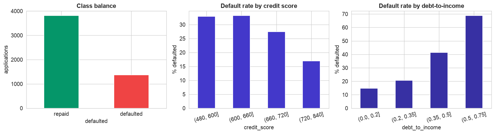
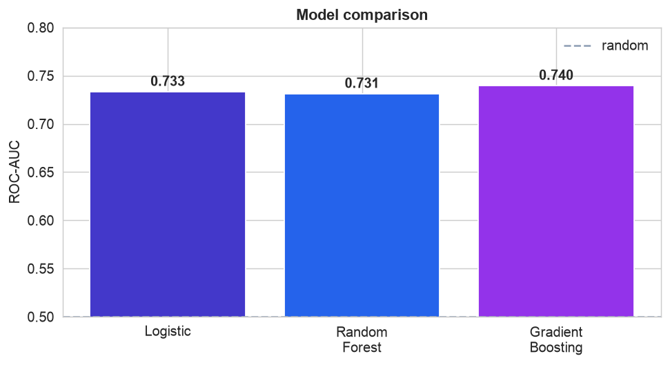
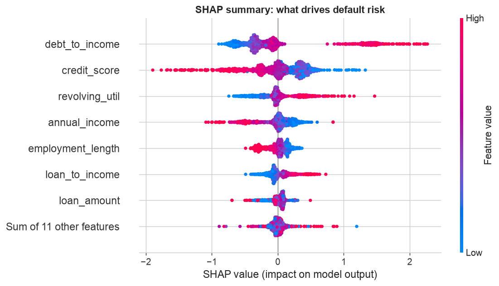
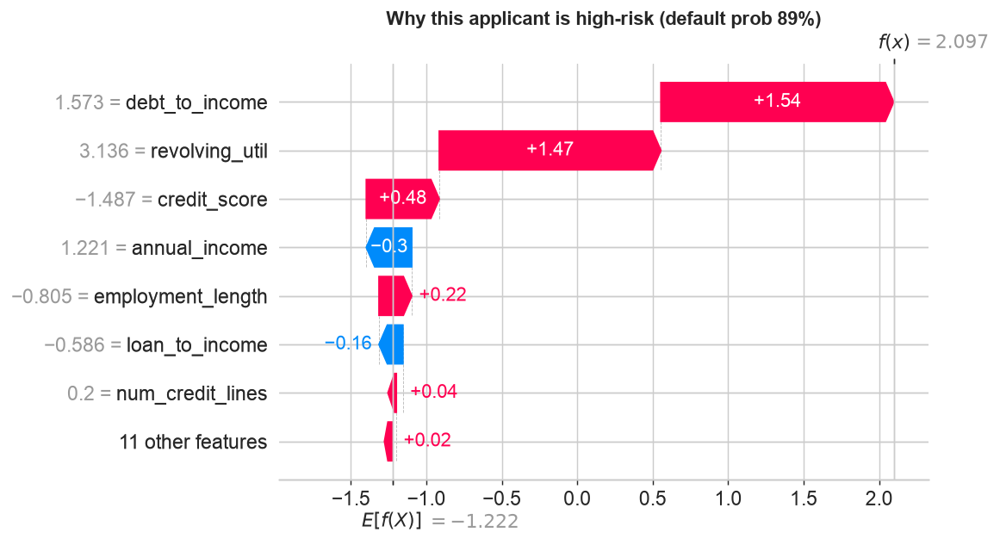
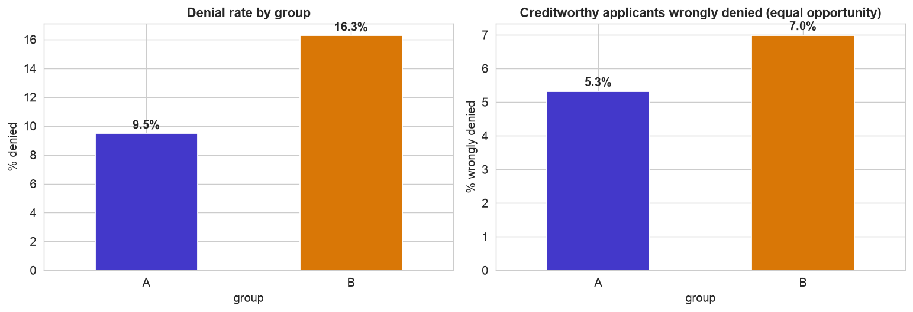

A credit model cannot just be accurate. The law requires that a declined applicant be told why (an adverse-action notice), and that the model not discriminate against protected groups. So this case study carries three burdens the earlier ones did not: real cleaning of a messy file, per-decision explanations with SHAP, and a fairness audit. It is the full pipeline, with a conscience.
Cleaning (Step 4): the file has text-valued income, free-text employment, and messy categories. Explaining (Step 8): SHAP turns each score into legally-required reason codes. Fairness (Step 9): a model blind to the protected attribute can still produce unequal outcomes, so we measure it.
The 12-Step Method
The same repeatable loop, now with explainability and fairness built in. The companion notebook runs all twelve steps; the sections below tell the story and show the plots.
One row per application with annual_income (text!),
credit_score, employment_length (text!), debt_to_income,
revolving_util, num_credit_lines, loan_amount, home_ownership,
loan_purpose, age, a protected group (A/B), and the target
defaulted. Deliberately messy.
Define, Collect, Inspect, Clean (Steps 1–4)
Define the objective
Predict default to inform an approve/deny decision. But in a regulated domain the model must also be
explainable (adverse-action notices are legally required) and fair across protected
groups. We treat the group column as a stand-in for a legally protected class (race, gender, age),
which fair-lending laws such as the ECOA forbid discriminating on.
Collect the data
A raw export from the loan-origination system, one row per application, straight from the source and not yet cleaned.
Inspect the data
The file fights back: annual_income is text with dollar signs and 'n/a'; employment_length
reads '10+ years' and '< 1 year'; categories come in mixed case; credit scores have gaps; and there are impossible
ages, negative debt ratios, and duplicate applications. About 26% defaulted.
Clean the data
| Problem | Detail | Fix |
|---|---|---|
annual_income as text | "$53,096", some "n/a" | strip $/commas, coerce to number |
employment_length as text | "10+ years", "< 1 year", blanks | parse to years (10+ → 10, <1 → 0) |
| Messy categories | home ownership & purpose in mixed case | standardize spelling |
| Impossible values | ages < 18, negative DTI, 35 duplicates | drop / set missing / dedupe |
After cleaning, 5,188 applications remain. Cleaning here is not a preamble, it is fully half the work, and none of the modeling could happen without it.
Engineer, Explore & Split (Steps 5–6)
Feature engineering, and the signal
A $20,000 loan means something different to a $40,000 earner than to a $200,000 one, so loan_to_income
captures affordability better than either column alone. Exploring confirms the credit intuition.

The credit intuition, confirmed. Left, about 26% of applicants defaulted, a moderately imbalanced target. Center, default rate falls sharply as credit score rises. Right, it climbs steeply with debt-to-income. Both relationships are clearly non-linear (note the jumps), a hint that a flexible model may pay off.
Split, with the protected attribute held aside
We hold out 25% of applicants and, crucially, exclude group from the features, the
model never sees the protected attribute. That is called being fair-through-unawareness, and Step 9 will show why it
is not enough. We keep group separate precisely so we can audit outcomes by it.
Build, Compare & Explain (Steps 7–8)
Compare models
A baseline plus a linear model and two ensembles, compared on ROC-AUC.

Here, flexibility earns its place. Unlike the earlier chapters, the non-linear structure of credit risk (the sharp jumps at low credit scores and high debt ratios) lets Gradient Boosting edge ahead at ROC-AUC 0.74, versus 0.73 for logistic regression. An AUC in the low 0.70s is normal and useful for credit; default is genuinely hard to predict. We take the boosted model forward, and because it is a tree model, SHAP can explain it exactly.
Explain every decision with SHAP
An opaque score is illegal in lending. SHAP decomposes each prediction into per-feature contributions, giving both a global picture and, for any single applicant, the exact reasons.

Global explanation. Each dot is one applicant's SHAP value for a feature, colored by the feature's value (red high, blue low). It reads exactly as a credit analyst would expect: a high debt-to-income and high revolving utilization push risk up (red dots to the right), while a high credit score and high income push it down. These are the model's drivers, in the open.

Local explanation, the adverse-action notice. The waterfall explains a single decision: starting from the average prediction, it adds each feature's push until it reaches this applicant's risk score (here a 89% default probability). You can read the exact, ranked reasons, a stretched debt-to-income (+1.54), heavy card utilization (+1.47), a poor credit score, each with its contribution. This is precisely what a lender must send a declined applicant: specific, ranked factors, not "the algorithm said no".
Audit Fairness & Deploy (Steps 9–12)
Fairness audit: blind is not fair
The model never saw group. That does not make it fair, because other features correlate with the group,
disparity flows in through the back door.

The outcomes are not equal. Left, Group B is denied at 16% versus 9% for Group A. Right, and more tellingly, creditworthy Group B applicants (who would not default) are wrongly denied more often, 7% versus 5%, an equal-opportunity gap. The approval ratio (0.93) happens to clear the legal four-fifths rule, but that gap is a real harm. The lesson: a model can be blind to the protected attribute and still discriminate, so you must measure fairness explicitly, and treat mitigation (reweighting, per-group thresholds, proxy audits) as a deliberate, governed choice.
Deploy on new data, and communicate
Saved as a joblib pipeline, the model scores a new application and, paired with SHAP, returns the reasons
behind it: a subprime, high-debt applicant is denied (84% risk); a high-score, low-debt applicant is approved (4%).
But deployment in lending carries duties beyond the earlier chapters: send reason codes with every
denial, monitor the fairness metrics on live decisions (not just at build time), keep a
human reviewer on rejections, and retrain as the applicant pool shifts. Chapter 126 covers operating
such a model responsibly.
Communicate: the Plain-English Write-Up (Step 12)
For a non-technical reader
What is this? We built a tool that estimates how likely a loan applicant is to fail to repay, to help decide who to approve, and we made sure the tool can explain each decision and treats different groups of people even-handedly.
What goes in, and what comes out
Inputs: the information on a loan application, income, credit score, existing debts, employment, how much they want to borrow, and so on. Output: a default-risk score that becomes an approve/deny recommendation, plus the specific reasons behind it.
The decisions we made, and why
- ✓We spent real effort cleaning the file first, incomes and job histories arrived as text ("$53,096", "10+ years"), which a computer cannot do math on until it is converted. This was fully half the work.
- ✓We made every decision explainable. For each applicant the tool lists the exact factors behind the score, which the law requires a lender to give anyone it turns down.
- ✓We checked the tool for fairness, even though it never sees an applicant's group. It turned out to deny one group somewhat more, including some who would have repaid, because factors like income quietly stand in for the group. We measured this rather than assume it away.
How good is it, in plain terms
The tool is meaningfully better than guessing at spotting risky loans (though default is hard to predict, so it is not close to perfect). More importantly, every decision comes with a clear reason, and we can see and manage its effect on different groups.
The big idea
In lending, being accurate is not enough. Bottom line: a model has to be clean, explainable, and fair, and the only way to know it is fair is to measure the outcomes for each group, because a model that ignores who someone is can still treat them unequally.
Run the entire project in Python
The companion notebook is the full 12-step pipeline: it parses the text-valued income and employment fields, standardizes categories and drops impossible rows, engineers an affordability ratio, compares a baseline against logistic regression, random forest, and gradient boosting, explains the model globally and per-applicant with SHAP, audits fairness across the protected group (denial rate and equal opportunity), and scores a new application, with every table and chart explained.
View opens the rendered notebook instantly.
Open in Colab runs it live. To run locally, install numpy, pandas,
matplotlib, seaborn, scikit-learn, and shap.
🎓 Key Takeaways
- ✓Cleaning was half the work: parse text-valued income and employment, standardize categories, drop impossible rows, before any model.
- ✓Feature engineering helps:
loan_to_incomecaptures affordability better than loan amount or income alone. - ✓Compare models: gradient boosting edged out logistic regression (ROC-AUC about 0.74) on this non-linear problem.
- ✓Explain with SHAP: global drivers and per-applicant reason codes for the legally-required adverse-action notice.
- ✓Audit fairness: a group-blind model still denied Group B more and wrongly denied creditworthy B applicants more, measure it, do not assume it away.
Take It Further
Five ways to extend the project in the notebook:
A cost-based threshold
Balance the loss from a default against the profit from a good loan to pick the approval cutoff.
Mitigate the fairness gap
Use a per-group threshold to close the equal-opportunity gap, and see what it costs.
Hunt the proxies
Try to predict the protected group from the other features. If you can, that is how disparity leaks in.
group; check its AUC.Calibrated for both groups?
Does a "30%" mean 30% for each group? Draw a reliability curve per group.
calibration_curve within each group.Generate reason codes
For one applicant, turn the SHAP contributions into the top adverse-action reasons.
All five, worked in a companion notebook
A second notebook, Take It Further, rebuilds the Chapter 124 model and works every one of these five extensions with visuals and explanations, a cost-based threshold, per-group fairness mitigation, a proxy hunt, calibration across groups, and SHAP reason codes, closing with a plain-English summary.
Quiz: Test Yourself
Eight questions on the credit-risk project, cleaning, SHAP, and fairness. Answer them, hit Check Answers, and keep refining until you score 100%. Your progress is saved, so you can hop back to the chapter and return anytime.
We have built and audited a string of models. The next chapter zooms out from any single one. Chapter 125 · From Model to Decision compares models with the right metrics, guards against leakage, interprets the winner, and communicates it to the people who will act on it.